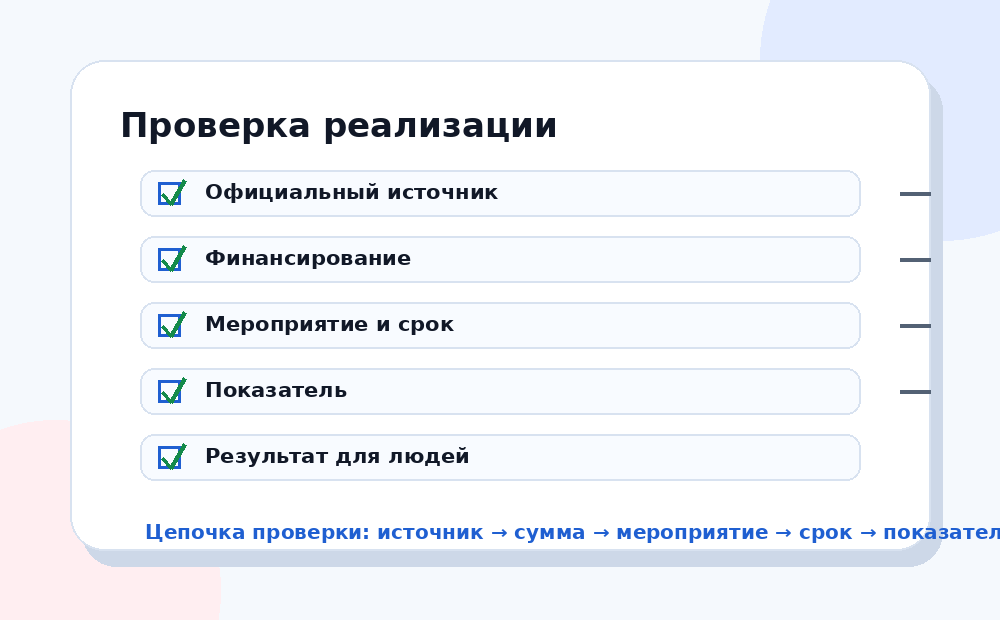

Практическая польза сайта — показать, где искать данные и как отличать заявленную цель от подтверждённого результата.

Сначала откройте официальный сайт национальных проектов или раздел Правительства РФ. Там смотрят название проекта, цели и направления.
Не анализируйте абстрактное название. Выберите меру: объект, услугу, выплату, программу, федеральный проект.
Для бюджетной части используйте «Электронный бюджет», материалы Минфина и открытые документы об исполнении.
Смотрите, какие показатели заявлены: количество объектов, охват граждан, сроки, качество услуги, изменение доступности.
Ищите отчёты, новости официальных органов, региональные данные и отзывы пользователей услуг.
Подходит для первого понимания: какие проекты действуют и что входит в их структуру.
Нужен, чтобы смотреть финансовую сторону: расходы, исполнение, документы.
Используется для мониторинга управленческих данных и показателей реализации.